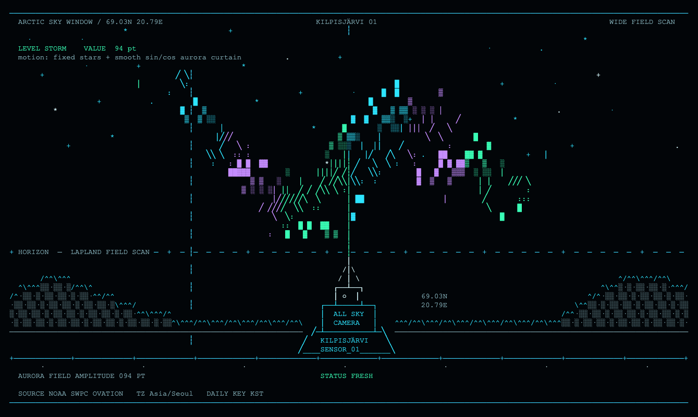
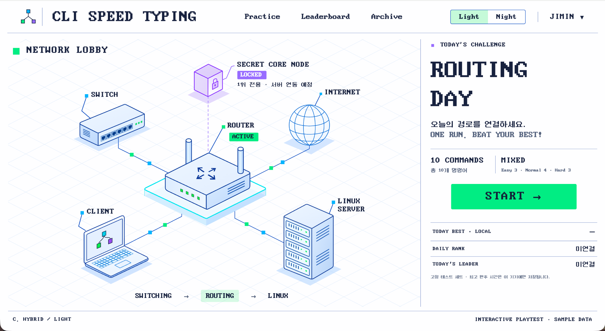
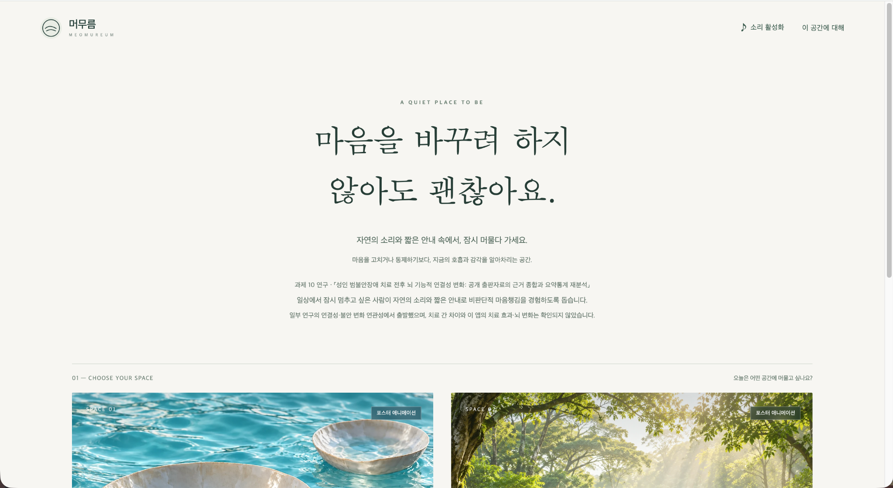
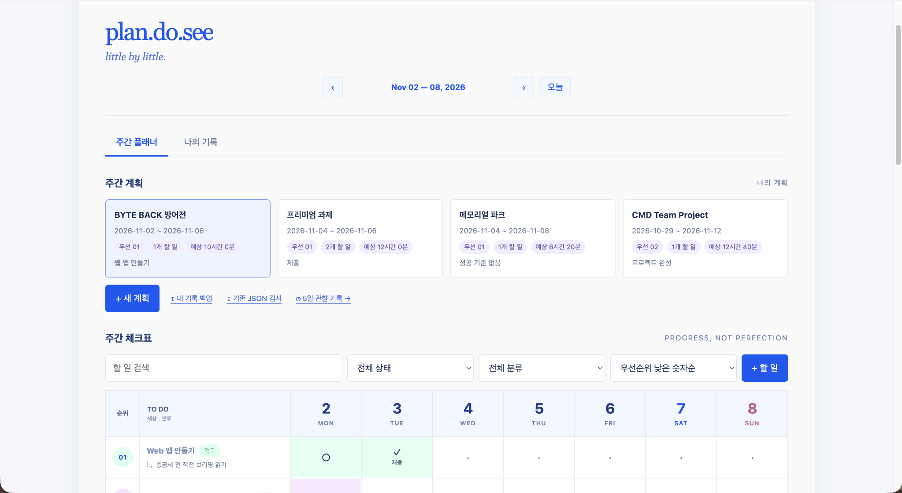

PROJECT 01
Aurora Observation
실시간 오로라 정보를 고정폭 문자와 관측 장비의 시각 언어로 표현한 데이터 정보판.
MY DESIGN DECISION
장식을 덜어내고 관측 정보의 가독성을 우선했습니다. 레퍼런스를 그대로 따르기보다 실제 데이터에 반응하는 ASCII 하늘 연출을 선택했습니다.
안녕하세요, 웹디자이너 홍지민입니다.
상품 상세페이지 디자인 실무를 바탕으로, AI와 협업해 웹사이트를 기획하고 화면의 사용성과 완성도를 다듬어 왔습니다. 디자인 판단이 실제 결과물에 어떻게 반영됐는지 네 개의 프로젝트로 소개합니다.
웹디자인 실무 경험 위에 디지털 기획과 새로운 제작 방식을 더해가고 있습니다.
웹디자이너 · 상품 상세페이지 및 디지털 콘텐츠 디자인
웹디자이너 · 상품 상세페이지 제작 및 이미지 편집
이전 직장에서 상품 상세페이지 디자인 및 콘텐츠 제작 업무를 담당했습니다. 해당 작업물에는 모델 이미지와 브랜드·상품 관련 자료가 포함되어 있어 초상권 및 저작권, 상업적 사용 권리를 고려해 온라인에 공개하지 않습니다. 면접 시 공유 가능한 범위에서 실제 작업 사례와 디자인 과정에 대해 별도로 설명드리겠습니다.
같은 AI 도구를 활용하더라도, 무엇을 보여주고 어떻게 쓰게 할지는 프로젝트마다 다르게 판단했습니다.

실시간 오로라 정보를 고정폭 문자와 관측 장비의 시각 언어로 표현한 데이터 정보판.
장식을 덜어내고 관측 정보의 가독성을 우선했습니다. 레퍼런스를 그대로 따르기보다 실제 데이터에 반응하는 ASCII 하늘 연출을 선택했습니다.

네트워크·리눅스 명령어를 익히면서 최단 기록에 도전하는 레트로 타이핑 게임.
시간제한 방식에서 10개 명령어 스피드런으로 규칙을 바꾸고, 픽셀 그래픽과 실제 입력 영역의 가독성을 분리해 균형을 조정했습니다.

자연음과 음성 가이드를 결합한, 잠시 머물다 떠날 수 있는 비치료적 명상 웹 앱.
물빛 색감, 자연음의 균형, 종료 안내 문구를 반복 조정해 사용자가 서두르거나 성과를 강요받지 않는 경험을 만들고자 했습니다.

주간 계획과 실제 실행 시간을 비교하고, 한 주의 기록을 정리하는 웹 다이어리. 공개 체험판에는 가상 예시 데이터만 사용합니다.
시간 비교 그래프의 크기와 텍스트 비율을 여러 차례 조정하고, 기록·회고 화면에서 사용자가 먼저 읽어야 할 정보를 정리했습니다.
디자인과 웹 프로젝트에 관한 이야기를 나누고 싶습니다.